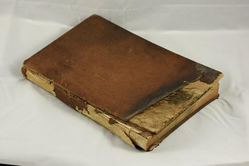

The "Forever Classics" is a startup created by Yannick Bright in 2001. His idea was to re-write old bestsellers, into new books made with recyclable materials.
Mr. Bright came up with this while he was reading an old book, called "the history of the forbidden soccer game" published in 1893; the pages were dry and yellowed,
and the book showed various encrustations and signs of old age. It was in that moment that Bright wanted to link his passion for books, with his willingness to
help the environment. In those days, in fact, the first signs of global warming started to make the news: the ice in the Antarctica was melting at a record speed,
cities were completely covered with smog, and the number of deaths due to the pollution was increasing rapidly.

So, in September 2001, Bright created this new venture,
with the goals of reducing the environmental pollution, and giving new life to the old bestsellers of the past. From 2001 to 2006, the Forever Classic company was
operating only in Milan, Italy. But after the success of the book "sweet like fruit" by Bruno Piva, the company got recognized not only in the nation but in the
whole world; this led to an expansion from Milan to all the Europe major cities in less than a decade. In 2015, there were almost 50 shops all over the European
territory. Then, in 2018, the company moved overseas, in Durham, NH. This was a huge step, because the number of bestsellers made in the US was almost three times
the number of bestsellers published in Europe, and people were eager to rediscover the past culture of the American literature. Today, the company has 225 shops all over
the world, from the US, to Brazil, to Australia. The company sold more than 1,000,000 bestsellers from the past in the last decade, and all this by helping
the environment as well.
Forever Classics' products are 95% made of recyclable materials, and the other 5% of plastic. The goal for the future is for the products
to be made 100% of recyclable materials. Forever Classics offers a wide range of products, from horror boooks, to adventure, romantic, and so on. Books can be rented
or bought, and the price is affordable for everyone. The target market starts from 4 years old, with some books like "The Cat and the Mouse", "The pen is on the table",
and "Momma buy me the ice cream".
Forever Classics is also connected to a GoFundMe page, and the monthly donations go to UNICEF and Save the Children. The link
of the page can be found HERE